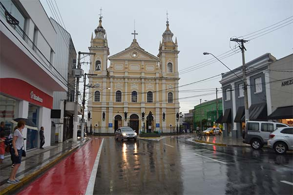

História de Pindamonhangaba
Pindamonhangaba é um município brasileiro do estado de São Paulo. Localiza-se no Vale do Paraíba, na microrregião de São José dos Campos. O principal acesso à cidade se dá pela Rodovia Presidente Dutra, no quilômetro 99. São duas as teorias sobre a fundação da cidade:
Primeira teoria
A região da atual Pindamonhangaba foi ocupada por portugueses pelo menos desde 22 de julho de 1643, registro mais remoto da ocupação por um certo capitão João do Prado Martins. Seis anos depois, em 17 de maio de 1649, a área foi formalizada como uma sesmaria e doada ao capitão. Parece não haver informação sobre o que ocorreu entre esta data e 12 de agosto de 1672, portanto 23 anos depois, data do primeiro registro da construção de uma capela em homenagem a São José pelos irmãos Antônio Bicudo Leme e Brás Esteves Leme, filhos do bandeirante Brás Esteves Leme, que fundaram a povoação de São José de Pindamonhangaba, tendo o padre João de Faria Fialho como primeiro vigário. Os irmãos Leme teriam adquirido da Condessa de Vimieiro essas glebas de terra ao norte da Vila de Taubaté, à margem direita do Rio Paraíba do Sul. Não há notícia de como a sesmaria teria passado das mãos do Capitão Martins para a Condessa de Vimieiro. A capela foi edificada no alto de uma colina, exatamente onde hoje se localiza a Praça Padre João de Faria Fialho, conhecida como praça do Quartel.
Baseado nesta teoria, em 7 de dezembro de 1953, o então prefeito Caio Gomes Figueiredo (1952-1955 e 1969-1972) oficializou, pela Lei 197, a data de 12 de agosto de 1672 como a data da fundação de Pindamonhangaba, tendo como fundadores, Antônio Bicudo Leme e Brás Esteves Leme. Esta lei, porém, foi revogada em 1973, como se verá a seguir.
Segunda teoria
No início do Século XVII, sesmarias foram sendo concedidas na zona de Taubaté – Pindamonhangaba – Guaratinguetá, destacando-se uma que foi concedida em 17 de maio de 1649 ao capitão João do Prado Martins na paragem chamada Pindamonhangaba. De acordo com a respectiva carta de doação, esse povoador, vindo de São Paulo com a família e agregados, já estava de posse de suas terras, naquela paragem, desde o dia 22 de julho de 1643. Por esta teoria, seria então a data de fundação de Pindamonhangaba, pois o sítio então aberto por João do Prado se situava no mesmo rocio da futura vila e cidade de nossos dias. A partir daí, da paragem à margem direita do Rio Paraíba do Sul, teria se formado um bairro dependente de Taubaté, para onde foram afluindo novos povoadores e moradores. Começou a funcionar, no povoado, uma igreja, de porte pequeno, cujo orago era Nossa Senhora do Bom Sucesso. A sua ereção foi devida ao padre João de Faria Fialho, considerado, segundo esta teoria, o fundador de Pindamonhangaba. Aquela antiga igreja de Nossa Senhora do Bom Sucesso, edificada na atual praça Padre João de Faria Fialho ou praça do Quartel, cedeu seu orago para o novo templo, construído em 1707 pelo mesmo sacerdote, onde é a atual capela-mor da Matriz (Santuário Mariano Diocesano). A igreja antiga no largo do Quartel tomou o orago de São José a partir de 1727. Foi demolida em 1840, tendo sido transferida para uma nova, edificada no largo São José, atual praça Barão do Rio Branco, cuja construção foi concluída em 1848. No local estão sepultados os corpos de soldados do Império, que integravam a guarda de honra de Dom Pedro. A igreja, tombada pelo patrimônio histórico, foi interditada em 2010 por apresentar rachaduras nas paredes, que são de taipa de pilão.

Data oficial da fundação
Diante das incertezas históricas sobre a data de fundação (12 de agosto de 1672 pela primeira teoria ou 22 de julho de 1643, pela segunda teoria), o prefeito João Bosco Nogueira (1973-1976 e 1983-1988) promulgou a Lei Municipal n° 1336, de 9 de março de 1973, oficializando a data magna do município como sendo a data da emancipação política, 10 de julho de 1705, revogando a lei anterior. Esta data permanece a oficial até que seja encontrada de forma documental, a verdadeira data da fundação.
Economia Atual
Em 2018, Pindamonhangaba teve um PIB de R$ 8,61 bilhões. Deste valor, a maior participação foi do setor de serviços, com valor adicionado de R$ 3,258 bilhões (37,8%); em segundo lugar, o setor industrial, com R$ 3,097 bilhões (35,9%) e em terceiro lugar, a agropecuária, com R$ 25,6 milhões (0,3%). O valor adicionado de impostos foi de R$ 1,599 bilhões (18,5%) e o adicionado da administração, serviços públicos e seguridade social foi R$ 635,9 milhões (7,4%). Sua indústria tem importante atuação na reciclagem de alumínio.
Evolução do PIB de 1999 a 2018
Então é isso! Espero que você tenha gostado do nosso artigo com essa curiosidade sobre essa cidade maravilhosa.